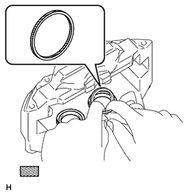
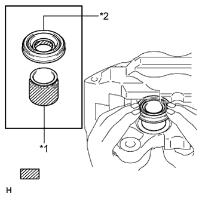
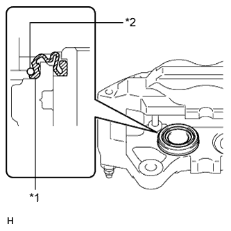

FRONT BRAKE > REASSEMBLY |
| 1. TEMPORARILY INSTALL FRONT DISC BRAKE BLEEDER PLUG |
Temporarily install the front disc brake bleeder plug to the disc brake cylinder assembly.
Install the front disc brake bleeder plug cap to the bleeder plug.
| 2. INSTALL PISTON SEAL |
|  |
Apply a light coat of lithium soap base glycol grease to the entire inner and outer circumference of 4 new piston seals.
 | Lithium soap base glycol grease |
Install the 4 piston seals to the disc brake cylinder assembly.
| 3. INSTALL FRONT DISC BRAKE PISTON |
|  |
Apply a light coat of lithium soap base glycol grease to the entire inner circumference of 4 new cylinder boots.
| *1 | Front Disc Brake Piston |
| *2 | Cylinder Boot |
| Lithium soap base glycol grease |
Apply a light coat of lithium soap base glycol grease to the entire outer circumference of the 4 front disc brake pistons where they contact the cylinder boots and front disc brake cylinder.
Install the 4 cylinder boots to the 4 front disc brake pistons.
Install the 4 front disc brake pistons to the front disc brake cylinder.
| 4. INSTALL CYLINDER BOOT |
|  |
Install one side of each of the 4 cylinder boots to the front disc brake cylinder.
| *1 | Cylinder Boot |
| *2 | Front Disc Brake Set Ring |
| 5. INSTALL FRONT DISC BRAKE SET RING |
Install the 4 front disc brake set rings.